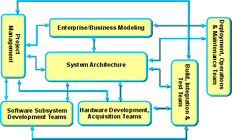

| Guideline: Systems Engineering Management |
 |
|
IntroductionRUP systems engineering projects are managed in a similar way to RUP software development projects, sharing many of the project management activities. There are, however, additional roles and activities in RUP systems engineering, and the size and nature of the projects (there might be significant hardware subsystems, for example) means there are other differences in management approach (discussed in the following sections). The Systems Engineering Delivery Process section introduces the Model Driven Systems Development (MDSD) Lifecycle. This presents, in an abstract way, how the system lifecycle is related to subordinate subsystem development lifecycles. To some extent, this is a descriptive convenience: while it is certainly possible to realize the organization for a project in this way (and, in the case where the development of a subsystem is formally contracted out to a separate organization, it would be realized this way), it is possible to integrate the development work much more closely. In this case, a single physical team (as shown below) addresses the development, with some resources operating in both system architecture and subsystem development teams, changing RUP roles as they do so. Project organizationThe movement from a serialized to an iterative process has profound implications in how a project must be organized. In a serialized process, staff are often assigned to a project until their artifacts are complete. For example, the engineering staff might complete the specifications, hand them off to the development staff, and move on to the next project. In any RUP-based project, no such handoff occurs. Rather, the artifacts evolve throughout the development. It follows that the staff responsible for project artifacts, such as the requirements database and UML architecture, must be assigned to the development project throughout its duration, although the level of effort varies across the project lifecycle. The figure shows the organization for a typical RUP systems engineering project. The organization is collection of development teams, each with a project manager and a technical lead. There are also teams that deal with overall system architecture and project management.  A RUP Systems Engineering Organization Chart. In this team structure:
Concurrent design and implementationOne feature of the RUP systems engineering organization approach is that it scales to very large programs. This is accomplished by taking advantage of the decomposition of the system into subsystems and localities with their derived requirements. Each of these Analysis Model elements is suitable for concurrent design and development. As described in the previous section, UML subsystems can be assigned to separate develop teams, localities to hardware development or acquisition teams. Each team works from its derived sets of services to develop their portion of the Design Model and Implementation Model. This way the design and implementation of the design elements can proceed in parallel. For very large systems, a systems-of-systems approach can be adopted. In this case, each UML subsystem has its own Locality Model. This assignment permits the application of the above organization structure at the subsystem level, providing even more scalability. Iterative development, integration, and testOne central feature of the RUP is that the system is developed in a series of iterations, each of which adds functionality. The system is integrated and tested at each iteration. The iteration testing is a subset of the system tests. Consequently, the final iteration results in a fully tested system ready for transition to the operational setting. The timing and content of iterations are captured in the system development plan early in the project. However, like any RUP artifact, the system development plan is updated continually to reflect the emerging understanding of the system as it comes together. In particular, the further away an iteration is in time, the less detailed (and less reliable) is the planning for it. As an iteration approaches, its content is captured in a finer-grained system iteration plan, specified by the use cases and supplementary requirements to be realized by the components developed in the iteration. Each iteration is tested by the subset of applicable system test cases. Recall that subsystems and localities have derived services that trace from system use cases. This tracing provides a basis for derived iteration plans for the subsystems and localities. That is, the content of each system iteration determines by traceability the functionality that needs to be provided by the subsystems and localities to support the iteration. In practice, the development teams negotiate the iteration content to reflect their development practicalities. For example, an early system iteration cannot require full functionality of a subsystem. Compromises must be made. A good system development plan provides the opportunity to identify and resolve system technical risks early, before the typical panic of the waterfall-based integration and testing phase. The technical risks can involve both functional and nonfunctional requirements. For example, an early integration can shake out system start-up and fail-over issues that cannot be fully understood with detailed design and interface specifications. In practice, the early iterations must validate that the architecture is sufficient to meet the non-functional requirements. Iterative system development might seem more expensive because it requires more testing, as well as a scaffold or a simulated hardware environment to support the early iterations. Coordination of the iteration content across development teams also takes more project management effort. However, these apparent costs are offset by the savings in early identification and mitigation of risks associated with the system architecture. It is a standard engineering principle that removing architectural defects late in a project is much more expensive than removing them early. Removing defects late also adds uncertainty and schedule risk late in a project. The role of the testing organization is different than it is in an organization that adopts a serialized, waterfall approach. Rather than spending more of the development planning for an overall system integration at the end of the development, the organization spends its time integrating, testing, and reporting defects. |